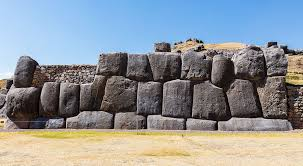
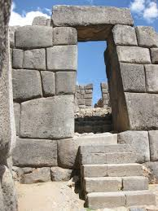
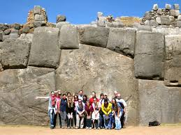

This Inca fortress overlooks the city of Cusco. Sacsayhuaman can be variously translated as 'speckled falcon' or 'speckled head'. There is a belief that the city of Cusco was set out in the form of a puma whose head was the hill of Sacsayhuaman.

The outer walls are made from massive diorite blocks from nearby, and the inner buildings and towers are made from dark andesite some of it brought from over 35km away.

The main ramparts consist of three massive parallel walls zigzagging together for some 400m, designed to make any attacker expose his flanks.

A group of people visiting the 'fortress'.
Why you should visit the Ruins!
The Sacsayhuaman ruins make for an awesome half-day trip from Cusco city centre. They are easily reached, with a short drive from the city centre. The ruins can be combined with a visit to other, smaller nearby ruins, or as a standalone visit in itself. Located outside the city centre, the views over the city are spectacular from this historic site, and make it one of the best things to do in Cusco.
Other Things to do around the Area
The Cerro Colorado Vinicunca is a beautiful area to visit while you're already in the Sacsayhuaman Ruins. The Apupacha Horse Adventure is a great family activity where you can enjoy the scenery from the back of a horse! Amazon Wildlife Peru is another great family day that you can all enjoy while looking out the animals like, rare monkeys, anaconda, sloth, tapir, and more!
Visitor Reviews
Amazing! My family and I had a great time exploring the ruins together this summer. It was beautiful, so much fun! I recommend taking the family there on your next vacation!
-Nancy Gerber
My husband and I went there for our honeymoon, and he isn't usually as big fan of these kinds of things. BUT, we both ended up enjoying the history we saw in the ruins and enjoyed seeing all of the different kinds of fortresses that were built from such a long time ago. We loved it there!
-Marybelle Dolly Lewis III
This trip was so dope! Loved seeing the cool rocks with my buds. We went for two days and never got bored of it. You should go!
-Bobert Bobathan